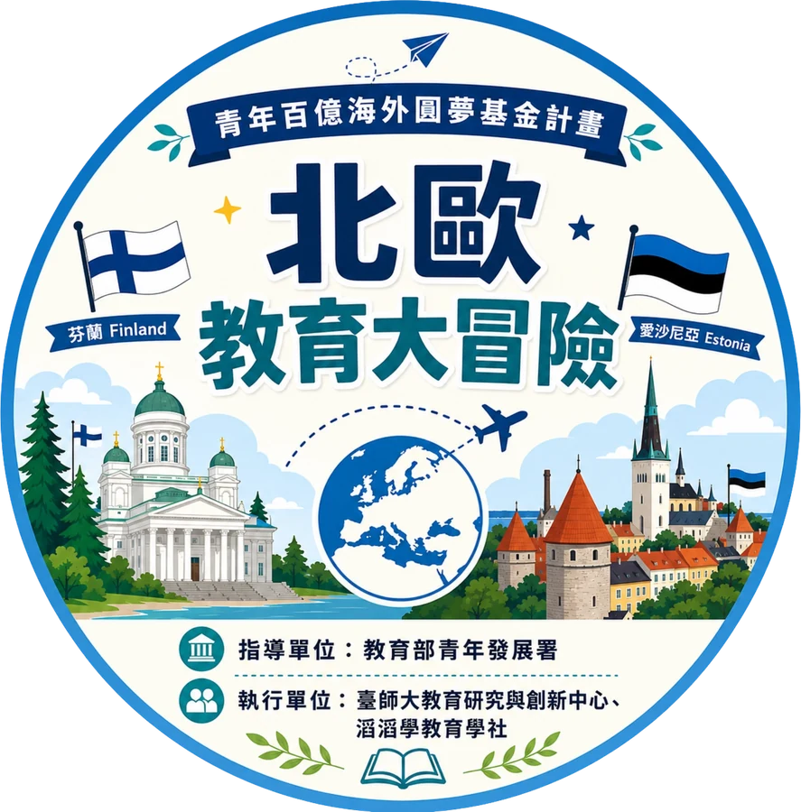

🇫🇮 🇪🇪 2026.8.8 ～ 8.24 芬蘭與愛沙尼亞
北歐教育大冒險20 位高中生的 17 天見學
從芬蘭國家教育署到塔林市政府教育局，從綜合學校的課堂到新創園區與心理健康組織，學生帶著自己出發前寫下的問題上路，在現場找答案，回來後再回頭檢視原本的想像。

EXECUTIVE SUMMARY
重點摘要
先看結論：這趟走了哪些地方、在兩國看到什麼、學生把什麼帶了回來。
WHAT STUDENTS TOOK HOME
學生帶回來的六件事
學生在成果報告與返國後問卷裡寫下的改變。引用一律匿名。
CROSS-CUTTING THEMES
跨單位的共同主題
把 11 場參訪放在一起看，有四個主題反覆出現。色塊標示它出現在哪些單位。
ROUTE MAP
17 天的參訪路線
地圖會跟著行程移到當時所在的地區：飛機降落赫爾辛基，巴士在城裡逐站移動、北上坦佩雷再回來，渡輪橫越芬蘭灣到塔林。點右側清單可跳到任一站，地圖下方的按鈕可切換地區。
DAY BY DAY
每日行程與交流重點
17 天逐日行程；有參訪單位的日子附上交流重點與照片，照片可點開放大。
PRE AND POST SURVEY
前後測怎麼說
THE PROGRAMME
計畫與團隊
從行前培訓、出訪見學到返國後的成果，這趟旅程前後跨了半年多。